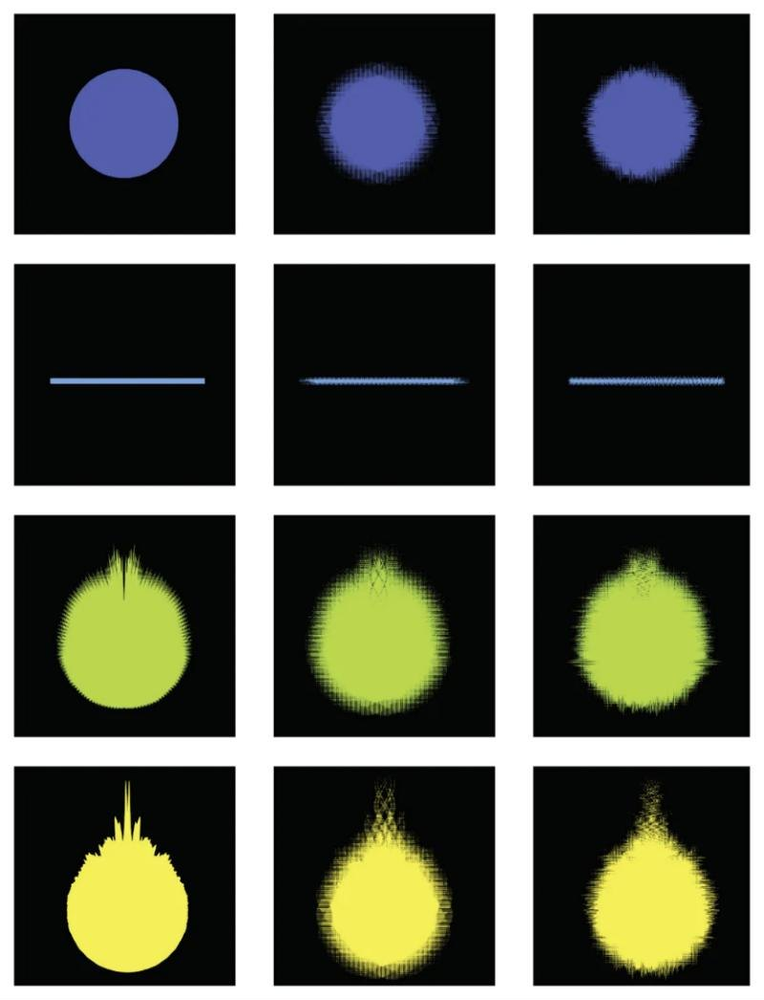

Le Livre des Sons
Livre · 2026
Le Livre des Sons propose un système de règles de correspondance explicites et vérifiables entre paramètres visuels et paramètres sonores. Il aboutit à un logiciel, SIGN.
Plus de 400 pages, en trois parties : un laboratoire expérimental de 23 études et 66 planches, un essai sur les régimes perceptifs, et des ouvertures.
- Recherche
- Dessin
- Composition
- Édition
Mon rôle
Auteur. Dessin des planches, enregistrement des échantillons et composition des objets sonores, conception du site.
Voir et entendre
